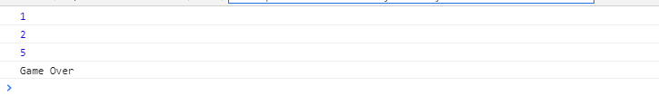

Promise对大家来说并不是很陌生，它是一个异步编程的解决方案，主要解决了前端回调地域问题。用阮老师的话说，它“就是一个容器，里面保存着某个未来才会结束的事件（通常是一个异步操作）的结果”。
Promise有三种状态：pending(初始状态)、fulfilled(成功)、reject(失败)，初始状态pending只能变成fulfilled或者reject，这一过程是不可逆的，当状态发生改变时，会触发对应的回调方法。除此之外，也支持链式调用，then/catch会返回一个Promise，以供链式调用，盗用MDN上的一张图，Promise的执行流程如下图所示：
具体实现简单分为以下四步：
1、定义一个执行器fn,自带两个参数的函数，resolve/reject，在实例化Promise时，调用执行器fn，传入参数reslove/reject，初始化回调事件队列taskList
2、在执行then方法时，判断是不是初始状态pending，如果是，则将then中fullfilled/reject的回调推进执行队列taskList中，then方法返回一个promise实例
3、实现链式回调中，用id来标识不同的promise实例
4、当触发了执行器中参数函数时，根据id来判断当前执行的回调方法
实现代码：
1 //公共变量，用于标识MyPromise实例
2 index = 0;
3 //promise接收一个回调函数fn,有两个参数，reslove,reject
4 function MyPromise(fn) {
5 var _this = this;
6 //promise的三种状态
7 this.RESOLVE = "fullfilled";
8 this.PENDING = "pending";
9 this.REJECT = "reject";
10 this.id = index++;
11 //初始默认状态为penddding
12 this.state = this.PENDING;
13 //执行任务列表
14 this.taskList = [];
15 //最终执行的回调
16 this.finallyCallback = null;
17 //bind改变reslove/reject函数体内this的指向，确保指向MyPromise
18 fn.call(this, this.resolve.bind(this), this.reject.bind(this));
19 }
20
21 MyPromise.prototype.resolve = function(value) {
22 this.state = this.RESOLVE;
23 //2、状态变更时，执行完成的方法
24 this.taskList[this.id] && this.handler(this.taskList[this.id], value);
25 };
26
27 MyPromise.prototype.reject = function(value) {
28 this.state = this.REJECT;
29 //2、状态变更时，执行完成的方法
30 this.taskList[this.id] && this.handler(this.taskList[this.id], value);
31 };
32 //执行任务回调
33 MyPromise.prototype.handler = function(task, value) {
34 var result = null;
35 if (this.state === this.RESOLVE) {
36 result = task.onFullFilled(value);
37 } else if (this.state === this.REJECT) {
38 result = task.onReject(value);
39 }
40 var nextId = this.id + 1;
41 //需要判断返回值是不是MyPromise实例，如果是，将之前的任务队列赋值给新的MyPromise实例
42 if (result instanceof MyPromise) {
43 result.id = nextId;
44 result.taskList = this.taskList;
45 result.finallyCallback = this.finallyCallback;
46 } else {
47 //没有返回MyPromise实例
48 //如果有finally回调，则执行最终的回调
49 this.finallyCallback && this.finallyCallback();
50 }
51 };
52 //onFullFilled：成功的回调，onReject：失败的回调
53 MyPromise.prototype.then = function(onFullFilled, onReject) {
54 var _this = this,
55 obj = {
56 onFullFilled: onFullFilled,
57 onReject: onReject
58 };
59 //1、初始化时，将后续可能要执行的任务推送到执行任务队列中
60 if (this.state === this.PENDING) {
61 this.taskList.push(obj);
62 }
63 //返回一个promise，支持链式调用
64 return this;
65 };
66
67 //最终执行的方法,不管MyPromise的状态如何
68 MyPromise.prototype.finally = function(callback) {
69 this.finallyCallback = callback;
70 };测试代码：
var cc = new MyPromise(function(reslove, reject) {
setTimeout(function() {
reslove(2);
}, 500);
});
var dd = new MyPromise(function(reslove, reject) {
setTimeout(function() {
reject(3);
}, 500);
});
cc.then(function(num) {
console.log(num);
return dd;
})
.then(
function(cc) {
console.log(cc);
},
function(e) {
console.log(5);
}
)
.finally(function() {
console.log("Game Over");
});
console.log(1);执行结果：

实现过程简单粗暴，如有问题，烦请指出，谢谢！